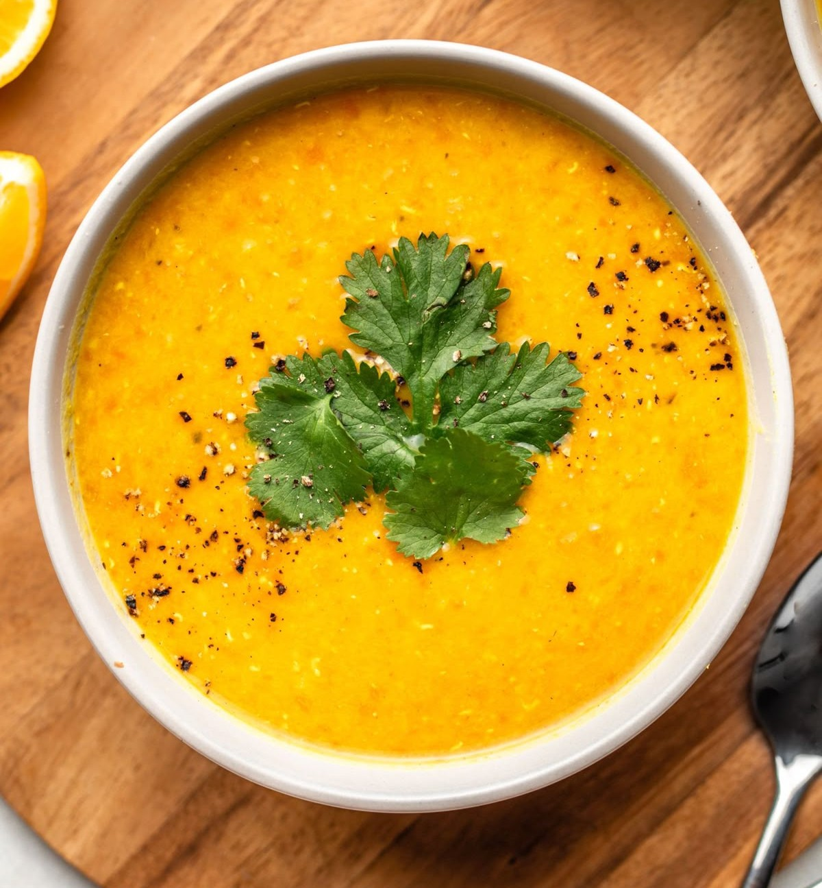

Lentil Soup 🥣

Ingredients:
- 1 cup red lentils (rinsed)
- 1 onion (chopped)
- 2 carrots (chopped)
- 1 potato (optional, chopped)
- 2 garlic cloves (minced)
- 1 tbsp olive oil
- 1 tsp cumin
- ½ tsp turmeric (optional)
- 4 cups vegetable or chicken broth
- Salt & pepper to taste
- Lemon wedges for serving
Preparation👨🍳:
- Sauté vegetables: In a large pot, heat olive oil. Add onion and garlic, cook until soft.
- Add veggies & spices: Stir in carrots, potatoes, cumin, turmeric, salt, and pepper.
- Add lentils & broth: Add rinsed lentils and broth. Bring to a boil.
- Simmer: Reduce heat and simmer for 25–30 minutes until lentils are soft.
- Blend (optional): Use a hand blender for a smooth texture, or leave it chunky.
- Serve: Garnish with lemon juice or fresh parsley.